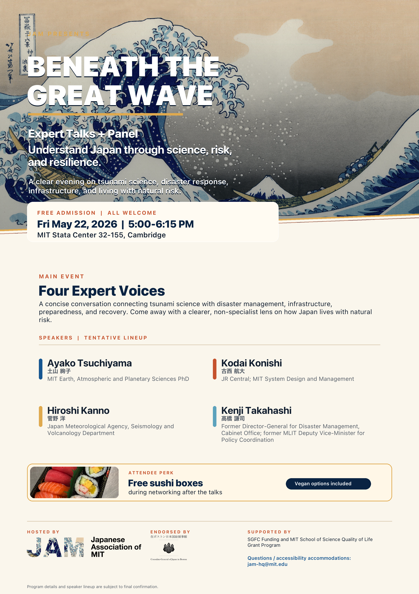
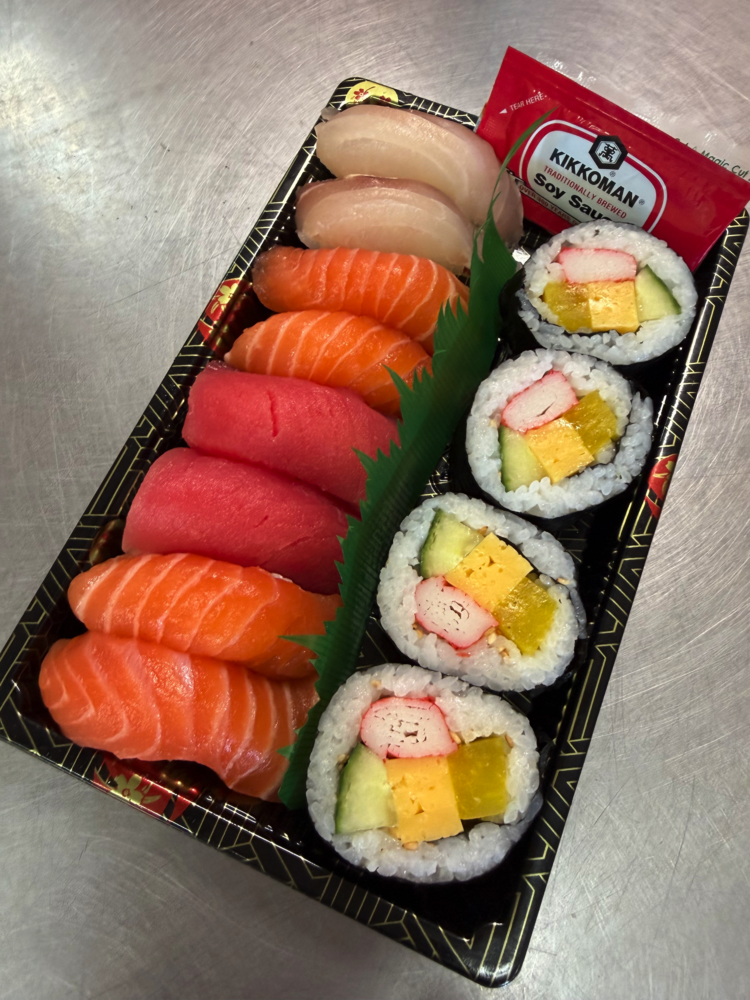

Science
Why earthquakes and tsunamis happen around Japan, and how scientists read the forces beneath the surface.
Expert talks + panel
Understanding Japan through science, risk, and resilience.

Program
The event combines a short tsunami video, expert talks, Q&A, and audience conversation. Complimentary sushi boxes and O-i Ocha will be available during networking after the talks.
Why earthquakes and tsunamis happen around Japan, and how scientists read the forces beneath the surface.
How transportation, built systems, and disaster planning respond to recurring natural risk.
How communities prepare, recover, and preserve knowledge across generations.
Food and drink
After the talks, registered attendees can enjoy a complimentary sushi box and O-i Ocha during the networking reception.
Available while supplies last.

Confirmed speakers
MIT Earth, Atmospheric and Planetary Sciences PhD.
Assistant manager, Central Japan Railway Company; MIT System Design and Management.
Kota has spent about six years at Central Japan Railway Company (JR Central), working on Shinkansen rolling stock maintenance and the implementation and management of rolling stock inspection facilities. He has also joined a project supporting the introduction of new rolling stock for Taiwan High Speed Rail. He is currently pursuing a master's degree in MIT System Design and Management (SDM), where he studies the design and management of complex socio-technical systems. After graduation, he plans to work on systems design for Shinkansen rolling stock.
Japan Meteorological Agency, Seismology and Volcanology Department.
Former Director-General for Disaster Management, Cabinet Office; former MLIT Deputy Vice-Minister for Policy Coordination.
Support
Beneath the Great Wave is supported by the Consulate-General of Japan in Boston. JAM also welcomes future partners for lecture and cultural programming.
Archive